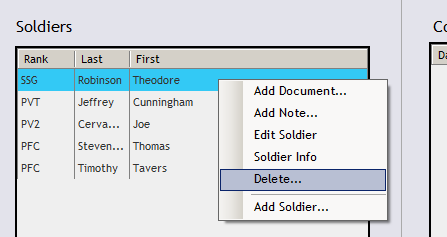

When a Soldier is no longer under your supervision, you may remove that Soldier by selecting the Soldiers Tab on the main navigation bar at the top of your screen.
Your current Soldiers populate the list on the left side of the screen. Click the Trash Can button to move the selected Soldier to the recycling bin. Alternately, you may right-click a Soldier and select the Delete... option.